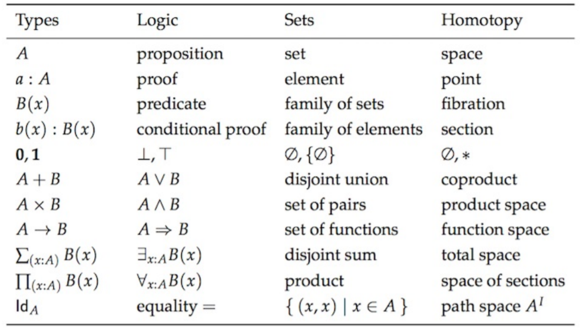
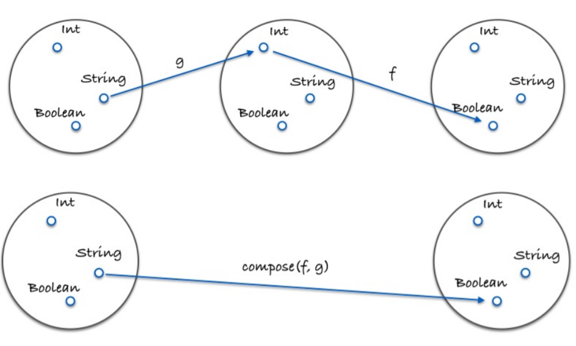

JS函数式编程
我们在做什么
“we both know what happens when you assume”，源自一句名言“When you assume you make an ASS of U and ME”，意思是“让两人都难堪”）。但我猜想你在使用可变状态（mutable state）、无限制副作用（unrestricted side effects）和无原则设计（unprincipled design）的过程中已经遇到过一些麻烦。
现在已经有一些通用的编程原则了，各种缩写词带领我们在编程的黑暗隧道里前行：DRY（不要重复自己，don’t repeat yourself），高内聚低耦合（loosecoupling high cohesion），YAGNI （你不会用到它的，ya ain’t gonna need it），最小意外原则（Principle of least surprise），单一责任（single responsibility）等等。这些原则同样适用于函数式编程(FP)。
先看基本的例子
let add = function (x, y) {
return x + y
};
let multiply = function (x, y) {
return x * y
};
let a = 4;
let b = 2;
let c = 0;
let result = add(multiply(b, add(a, c)), multiply(a, b));
//=>16
你会发现我们不过是在运用古人早已获得的知识
// 结合律（assosiative）
add(add(x, y), z) == add(x, add(y, z));
// 交换律（commutative）
add(x, y) == add(y, x);
// 同一律（identity）
add(x, 0) == x;
// 分配律（distributive）
multiply(x, add(y, z)) == add(multiply(x, y), multiply(x, z));
// 原有代码
add(multiply(b, add(a, c)), multiply(a, b));
// 应用同一律，去掉多余的加法操作（add(a, c) == a）
add(multiply(b, a), multiply(a, b));
// 再应用分配律
multiply(b, add(a, a));
当然这里我们定义 add 和 multiply 是为了代码完整性，实际上并不必要——在调用之前它们肯定已经在某个类库里定义好了。
我们希望去践行每一部分都能完美接合的理论，希望能以一种通用的、可组合的组件来表示我们的特定问题，然后利用这些组件的特性来解决这些问题。相比命令式编程的那种“某某去做某事”的方式，函数式编程将会有更多的约束，不过你会震惊于这种强约束、数学性的“框架”所带来的回报。
一等公民的函数
先看看常见的JS风格的一个例子
function ajaxCall(func) {
//...
}
// 用一个函数把另一个函数包起来，目的仅仅是延迟执行，真的是非常糟糕的编程习惯
let getServerStuff = function (callback) {
return ajaxCall(function (json) {
return callback(json);
});
};
// 这行
// return ajaxCall(function (json) {
// return callback(json);
// });
// 等价于这行
// return ajaxCall(callback);
// 应该改成这样
let getServerStuff = ajaxCall;
再看另一个例子
class Views {
//...
}
class Db {
//...
}
// 这样做除了徒增代码量，提高维护和检索代码的成本外，没有任何用处
let BlogController = (function () {
let index = function (posts) {
return Views.index(posts);
};
let show = function (post) {
return Views.show(post);
};
let create = function (attrs) {
return Db.create(attrs);
};
let update = function (post, attrs) {
return Db.update(post, attrs);
};
let destroy = function (post) {
return Db.destroy(post);
};
return {
index,
show,
create,
update,
destroy
};
})();
// 我们可以把它重写成这样：
let BlogController = {
index: Views.index,
show: Views.show,
create: Db.create,
update: Db.update,
destroy: Db.destroy
};
// 或者直接全部删掉，因为它的作用仅仅就是把视图（Views）和数据库（Db）打包在一起而已
另外，如果一个函数被不必要地包裹起来了，而且发生了改动，那么包裹它的那个函数也要做相应的变更。
httpGet('/post/2', function(json){
return renderPost(json);
});
// 如果 httpGet 要改成可以抛出一个可能出现的 err 异常，那我们还要回过头去把“胶水”函数也改了
// 把整个应用里的所有 httpGet 调用都改成这样，可以传递 err 参数。
httpGet('/post/2', function(json, err){
return renderPost(json, err);
});
// 写成一等公民函数的形式，要做的改动将会少得多
httpGet('/post/2', renderPost);
// renderPost 将会在 httpGet 中调用，想要多少参数都行
除了删除不必要的函数，正确地为参数命名也必不可少。当然命名不是什么大问题，但还是有可能存在一些不当的命名，尤其随着代码量的增长以及需求的变更，这种可能性也会增加。
如果一个底层函数使用了 this，而且是以一等公民的方式被调用的，那你就等着 JS 这个蹩脚的抽象概念发怒吧
const fs = require('fs');
// 太可怕了
fs.readFile('freaky_friday.txt', Db.save);
// 好一点点
fs.readFile('freaky_friday.txt', Db.save.bind(Db));
纯函数的好处
纯函数是这样一种函数，即相同的输入，永远会得到相同的输出，而且没有任何可观察的副作用。
比如 slice 和 splice。我们说 slice 符合纯函数的定义是因为对相同的输入它保证能返回相同的输出。而 splice 却会嚼烂调用它的那个数组，然后再吐出来；这就会产生可观察到的副作用，即这个数组永久地改变了。
let xs = [1,2,3,4,5];
// 纯的
xs.slice(0,3);
//=> [1,2,3]
xs.slice(0,3);
//=> [1,2,3]
xs.slice(0,3);
//=> [1,2,3]
// 不纯的
xs.splice(0,3);
//=> [1,2,3]
xs.splice(0,3);
//=> [4,5]
xs.splice(0,3);
//=> []
下一个例子
// 不纯的
let minimum = 21;
let checkAge = function (age) {
return age >= minimum;
};
// 纯的
let checkAge = function (age) {
let minimum = 21;
return age >= minimum;
};
// 纯的
const minimum = 21;
let checkAge = function (age) {
return age >= minimum;
};
在不纯的版本中， checkAge 的结果将取决于 minimum 这个可变变量的值。换句话说，它取决于系统状态（system state）；这一点令人沮丧，因为它引入了外部的环境，从而增加了认知负荷（cognitive load）。
另一方面，使用纯函数的形式，函数就能做到自给自足。我们也可以让 minimum成为一个不可变（immutable）对象，这样就能保留纯粹性，因为状态不会有变化。要实现这个效果，必须得创建一个对象，然后调用 Object.freeze 方法
let immutableState = Object.freeze({
minimun: 21
});
副作用是在计算结果的过程中，系统状态的一种变化，或者与外部世界进行的可观察的交互。
副作用可能包含，但不限于：
- 更改文件系统
- 往数据库插入记录
- 发送一个 http 请求
- 可变数据
- 打印/log
- 获取用户输入
- DOM 查询
- 访问系统状态
这个列表还可以继续写下去。概括来讲，只要是跟函数外部环境发生的交互就都是副作用——这一点可能会让你怀疑无副作用编程的可行性。函数式编程的哲学就是假定副作用是造成不正当行为的主要原因。
这并不是说，要禁止使用一切副作用，而是说，要让它们在可控的范围内发生。后面讲到 functor 和 monad 的时候我们会学习如何控制它们。
追求“纯”的理由
- 可缓存性（Cacheable）
- 可移植性／自文档化（Portable / SelfDocumenting）
- 可测试性（Testable）
- 合理性（Reasonable）
- 并行性(Parallelism)
可缓存性（Cacheable）
首先，纯函数总能够根据输入来做缓存。实现缓存的一种典型方式是 memoize 技术
let squareNumber = memoize(function(){return x * x});
squareNumber(4);
//=> 16
squareNumber(4); // 从缓存中读取输入值为 4 的结果
//=> 16
squareNumber(5);
//=> 25
squareNumber(5); // 从缓存中读取输入值为 5 的结果
//=> 25
下面的代码是memoize一个简单的实现，尽管它不太健壮
function momoize(f) {
let cache = {}
return function () {
let arg_str = JSON.stringify(arguments)
// 有cache则返回cache里的，总是保存到cache里
cache[arg_str] = cache[arg_str] || f(...arguments)
return cache[arg_str]
}
}
值得注意的一点是，可以通过延迟执行的方式把不纯的函数转换为纯函数
let pureHttpCall = memoize(function(url, params){
return function() { return $.getJSON(url, params); }
});
这里有趣的地方在于我们并没有真正发送 http 请求——只是返回了一个函数，当调用它的时候才会发请求。这个函数之所以有资格成为纯函数，是因为它总是会根据相同的输入返回相同的输出：给定了 url 和 params 之后，它就只会返回同一个发送 http 请求的函数
我们的 memoize 函数工作起来没有任何问题，虽然它缓存的并不是 http 请求所返回的结果，而是生成的函数。
重点是我们可以缓存任意一个函数，不管它们看起来多么具有破坏性。
可移植性／自文档化（Portable / SelfDocumenting）
纯函数是完全自给自足的，它需要的所有东西都能轻易获得。仔细思考思考这一点…这种自给自足的好处是什么呢？首先，纯函数的依赖很明确，因此更易于观察和理解。
// 不纯的
let signUp = function (attrs) {
let user = saveUser(attrs);
welcomeUser(user);
};
let saveUser = function (attrs) {
let user = Db.save(attrs);
//...
};
let welcomeUser = function (user) {
// Email(user, ...);
//...
};
// 纯的
let signUp = function (Db, Email, attrs) {
return function () {
// 参数绑定
let user = saveUser(Db, attrs);
welcomeUser(Email, user);
};
};
let saveUser = function (Db, attrs) {
//...
};
let welcomeUser = function (Email, user) {
//...
};
这个例子表明，纯函数对于其依赖必须要诚实，这样我们就能知道它的目的。仅从纯函数版本的 signUp 的签名就可以看出，它将要用到 Db、Email 和 attrs ，这在最小程度上给了我们足够多的信息。
其次，通过强迫“注入”依赖，或者把它们当作参数传递，我们的应用也更加灵活；因为数据库或者邮件客户端等等都参数化了。
命令式编程中“典型”的方法和过程都深深地根植于它们所在的环境中，通过状态、依赖和有效作用（available effects）达成；纯函数与此相反，它与环境无关，只要我们愿意，可以在任何地方运行它。
可测试性（Testable）
第三点，纯函数让测试更加容易。
我们不需要伪造一个“真实的”支付网关，或者每一次测试之前都要配置、之后都要断言状态（assert the state）。只需简单地给函数一个输入，然后断言输出就好了。
合理性（Reasonable）
很多人相信使用纯函数最大的好处是引用透明性（referential transparency）。如果一段代码可以替换成它执行所得的结果，而且是在不改变整个程序行为的前提下替换的，那么我们就说这段代码是引用透明的。
由于纯函数总是能够根据相同的输入返回相同的输出，所以它们就能够保证总是返回同一个结果，这也就保证了引用透明性。我们来看一个例子。
let Immutable = require('immutable');
let decrementHP = function(player) {
return player.set("hp", player.hp-1);
};
let isSameTeam = function(player1, player2) {
return player1.team === player2.team;
};
let punch = function(player, target) {
if(isSameTeam(player, target)) {
return target;
} else {
return decrementHP(target);
}
};
let jobe = Immutable.Map({name:"Jobe", hp:20, team: "red"});
let michael = Immutable.Map({name:"Michael", hp:20, team: "green"});
punch(jobe, michael);
//=> Immutable.Map({name:"Michael", hp:19, team: "green"})
decrementHP 、 isSameTeam 和 punch 都是纯函数，所以是引用透明的。我们可以使用一种叫做“等式推导”（equational reasoning）的技术来分析代码。所谓“等式推导”就是“一对一”替换，有点像在不考虑程序性执行的怪异行为（quirks of programmatic evaluation）的情况下，手动执行相关代码。我们借助引用透明性来剖析一下这段代码。
let punch = function(player, target) {
if(player.team === target.team) {
return target;
} else {
return decrementHP(target);
}
};
因为是不可变数据，我们可以直接把 team 替换为实际值：
let punch = function(player, target) {
if("red" === "green") {
return target;
} else {
return decrementHP(target);
}
};
if 语句执行结果为 false ，所以可以把整个 if 语句都删掉：
let punch = function(player, target) {
return decrementHP(target);
};
如果再内联 decrementHP ，我们会发现这种情况下， punch 变成了一个让 hp 的值减 1 的调用：
let punch = function(player, target) {
return target.set("hp", target.hp-1);
};
总之，等式推导带来的分析代码的能力对重构和理解代码非常重要。事实上，我们重构海鸥程序使用的正是这项技术：利用加和乘的特性。
并行性(Parallelism)
最后一点，也是决定性的一点：我们可以并行运行任意纯函数。因为纯函数根本不需要访问共享的内存，而且根据其定义，纯函数也不会因副作用而进入竞争态（race condition）。
并行代码在服务端 js 环境以及使用了 web worker 的浏览器那里是非常容易实现的，因为它们使用了线程（thread）。
柯里化（curry）
不可或缺的 curry
我父亲以前跟我说过，有些事物在你得到之前是无足轻重的，得到之后就不可或缺了。微波炉是这样，智能手机是这样，互联网也是这样——老人们在没有互联网的时候过得也很充实。对我来说，函数的柯里化（curry）也是这样。
curry 的概念很简单：只传递给函数一部分参数来调用它，让它返回一个函数去处理剩下的参数。
你可以一次性地调用 curry 函数，也可以每次只传一个参数分多次调用。
let add = function(x) {
return function(y) {
return x + y
}
}
let inc = add(1)
inc(10)
// 11
这里我们定义了一个 add 函数，它接受一个参数并返回一个新的函数。调用add 之后，返回的函数就通过闭包的方式记住了 add 的第一个参数。一次性地调用它实在是有点繁琐，好在我们可以使用一个特殊的 curry 帮助函数（helperfunction）使这类函数的定义和调用更加容易。
const curry = require('lodash/curry')
let match = curry(function(what, str){
return str.match(what)
})
let replace = curry(function(what, replacement, str){
return str.replace(what, replacement)
})
let filter = curry(function(f, ary){
return ary.filter(f)
})
let map = curry(function(f, ary){
return ary.map(f)
})
我在上面的代码中遵循的是一种简单，同时也非常重要的模式。即策略性地把要操作的数据（String， Array）放到最后一个参数里
match(/\s+/g, "hello world")
// [ ' ' ]
match(/\s+/g)("hello world")
// [ ' ' ]
let hasSpaces = match(/\s+/g)
// function(x) { return x.match(/\s+/g) }
hasSpaces("hello world")
// [ ' ' ]
hasSpaces("spaceless")
// null
filter(hasSpaces, ["tori_spelling", "tori amos"])
// ["tori amos"]
let findSpaces = filter(hasSpaces)
// function(xs) { return xs.filter(function(x) { return x.match(/\s+/g) }) }
findSpaces(["tori_spelling", "tori amos"])
// ["tori amos"]
let noVowels = replace(/[aeiou]/ig);
// function(replacement, x) { return x.replace(/[aeiou]/ig, replacement) }
let censored = noVowels("*");
// function(x) { return x.replace(/[aeiou]/ig, "*") }
censored("Chocolate Rain");
// 'Ch*c*l*t* R**n'
这里表明的是一种“预加载”函数的能力，通过传递一到两个参数调用函数，就能得到一个记住了这些参数的新函数。
不仅仅是双关语／咖喱
用 map 简单地把参数是单个元素的函数包裹一下，就能把它转换成参数为数组的函数。
let getLength = function(x){
return x.length
}
let getAllLength = map(getLength)
只传给函数一部分参数通常也叫做局部调用（partial application），能够大量减少样板文件代码（boilerplate code）。
通常我们不定义直接操作数组的函数，因为只需内联调用 map(getChildren) 就能达到目的。这一点同样适用于 sort 、 filter 以及其他的高阶函数（higherorder function）（高阶函数：参数或返回值为函数的函数）。
当我们谈论纯函数的时候，我们说它们接受一个输入返回一个输出。curry 函数所做的正是这样：每传递一个参数调用函数，就返回一个新函数处理剩余的参数。这就是一个输入对应一个输出啊。哪怕输出是另一个函数，它也是纯函数。当然 curry 函数也允许一次传递多个参数，但这只是出于减少 () 的方便。
curry 函数用起来非常得心应手，通过简单地传递几个参数，就能动态创建实用的新函数；而且还能带来一个额外好处，那就是保留了数学的函数定义，尽管参数不止一个。
代码组合（compose）
函数饲养
let compose = function(f, g){
return function(x){
return f(g(x))
}
}
f 和 g 都是函数， x 是在它们之间通过“管道”传输的值在 compose 的定义中， g 将先于 f 执行，因此就创建了一个从右到左的数据流。
组合看起来像是在饲养函数让它们结合，产下一个崭新的函数。组合的用法如下：
let toUpperCase = function(str){
return str.toUpperCase()
}
let toLowerCase = function(str){
return str.toLowerCase()
}
let exclaim = function(str){
return str + '!'
}
let reverse = function(str){
return str.split('').reverse().join('')
}
let angry = compose(exclaim, toUpperCase)
let shout = compose(exclaim, toUpperCase)
console.log(exclaim(toUpperCase("hello")))
console.log(shout("hello"))
这个组合中函数的执行顺序应该是显而易见的。尽管我们可以定义一个从左向右的版本，但是从右向左执行更加能够反映数学上的含义——是的，组合的概念直接来自于数学课本。
现在是时候去看看所有的组合都有的一个特性了。
// 结合律（associativity）
// let associative = compose(f, compose(g, h)) == compose(compose(f, g), h)
// true
// 结合律的一大好处是任何一个函数分组都可以被拆开来，然后再以它们自己的组合方式打包在一起
console.log(compose(reverse, compose(toUpperCase, exclaim))("world"))
console.log(compose(compose(reverse, toUpperCase), exclaim)("world"))
符合结合律意味着不管你是把 g 和 h 分到一组，还是把 f 和 g 分到一组都不重要。
结合律的一大好处是任何一个函数分组都可以被拆开来，然后再以它们自己的组合方式打包在一起。
pointfree
pointfree 模式指的是，永远不必说出你的数据。它的意思是说，函数无须提及将要操作的数据是什么样的。一等公民的函数、柯里化（curry）以及组合协作起来非常有助于实现这种模式。
// 非 pointfree，因为提到了数据：word
let snakeCase = function (word) {
return word.toLowerCase().replace(/\s+/ig, '_');
}
// pointfree
snakeCase = compose(replace(/\s+/ig, '_'), toUpperCase)
这里所做的事情就是通过管道把数据在接受单个参数的函数间传递。利用 curry，我们能够做到让每个函数都先接收数据，然后操作数据，最后再把数据传递到下一个函数那里去。
另外，pointfree 模式能够帮助我们减少不必要的命名，让代码保持简洁和通用。对函数式代码来说，pointfree 是非常好的石蕊试验，因为它能告诉我们一个函数是否是接受输入返回输出的小函数。比如，while 循环是不能组合的。不过你也要警惕，pointfree 就像是一把双刃剑，有时候也能混淆视听。并非所有的函数式代码都是 pointfree 的，不过这没关系。可以使用它的时候就使用，不能使用的时候就用普通函数。
debug
组合的一个常见错误是，在没有局部调用之前，就组合类似 map 这样接受两个参数的函数。
// 错误做法：我们传给了 `angry` 一个数组，根本不知道最后传给 `map` 的是什么东西。
let latin = compose(map, angry, reverse)
latin(["frog", "eyes"])
// error
// 正确做法：每个函数都接受一个实际参数。
let latin = compose(map(angry), reverse)
latin(["frog", "eyes"])
// ["EYES!", "FROG!"])
如果在 debug 组合的时候遇到了困难，那么可以使用下面这个实用的，但是不纯的trace 函数来追踪代码的执行情况。
let trace = curry(function(tag, x){
console.log(tag, x)
return x
})
let dasherize = compose(join('-'), toLower, split(' '), replace(/\s{2,}/ig, ' '))
dasherize('The world is a vampire')
// TypeError: Cannot read property 'apply' of undefined
let dasherize = compose(join('-'), toLower, trace("after split"), split(' '), replace(/\s{2,}/ig, ' '));
// after split [ 'The', 'world', 'is', 'a', 'vampire' ]
trace 函数允许我们在某个特定的点观察数据以便 debug。像 haskell 和 purescript 之类的语言出于开发的方便，也都提供了类似的函数。
组合将成为我们构造程序的工具，而且幸运的是，它背后是有一个强大的理论做支撑的。
范畴学（category theory）
范畴学（category theory）是数学中的一个抽象分支，能够形式化诸如集合论（settheory）、类型论（type theory）、群论（group theory）以及逻辑学（logic）等数学分支中的一些概念。范畴学主要处理对象（object）、态射（morphism）和变化式（transformation），而这些概念跟编程的联系非常紧密。下图是一些相同的概念分别在不同理论下的形式：

在范畴学中，有一个概念叫做…范畴。有着以下这些组件（component）的搜集 （collection）就构成了一个范畴：
- 对象的搜集
- 态射的搜集
- 态射的组合
- identity 这个独特的态射
范畴学抽象到足以模拟任何事物，不过目前我们最关心的还是类型和函数，所以让我们把范畴学运用到它们身上看看。
对象的搜集
对象就是数据类型，例如 String 、 Boolean 、 Number 和 Object 等等。通常我们把数据类型视作所有可能的值的一个集合（set）。像 Boolean 就可以看作是 [true, false] 的集合， Number 可以是所有实数的一个集合。把类型当作集合对待是有好处的，因为我们可以利用集合论（set theory）处理类型。
态射的搜集
态射是标准的、普通的纯函数。
态射的组合
这就是本章介绍的新玩意儿—— 组合 。我们已经讨论过compose 函数是符合结合律的，这并非巧合，结合律是在范畴学中对任何组合都适用的一个特性。

let g = function(x){ return x.length }
let f = function(x){ return x === 4; }
let isFourLetterWord = compose(f, g)
identity 这个独特的态射
让我们介绍一个名为 id 的实用函数。这个函数接受随便什么输入然后原封不动地返回它：
let id = function(x) {return x}
id 函数跟组合一起使用简直完美。下面这个特性对所有的一元函数（unary function）（一元函数：只接受一个参数的函数） f 都成立：
// identity
compose(id, f) == compose(f, id) == f
// true
这就是实数的单位元（identity property）嘛！慢慢理解它的无用性，很快我们就会到处使用 id 了，不过暂时我们还是把它当作一个替代给定值的函数。这对写 pointfree 的代码非常有用。
除了类型和函数，还有什么范畴呢？还有很多，比如我们可以定义一个有向图（directed graph），以节点为对象，以边为态射，以路径连接为组合。还可以定义一个实数类型（Number），以所有的实数为对象，以 >= 为态射（实际上任何偏序（partial order）或全序（total order）都可以成为一个范畴）。范畴的总数是无限的，但我们只需要关心上面定义的范畴就好了。
总结
组合像一系列管道那样把不同的函数联系在一起，数据就可以也必须在其中流动——毕竟纯函数就是输入对输出，所以打破这个链条就是不尊重输出，就会让我们的应用一无是处。我们认为组合是高于其他所有原则的设计原则，这是因为组合让我们的代码简单而富有可读性。另外范畴学将在应用架构、模拟副作用和保证正确性方面扮演重要角色。
示例应用
声明式代码
我们要开始转变观念了，从本章开始，我们将不再指示计算机如何工作，而是指出我们明确希望得到的结果。
与命令式不同，声明式意味着我们要写表达式，而不是一步一步的指示。
以 SQL 为例，它就没有“先做这个，再做那个”的命令，有的只是一个指明我们想要从数据库取什么数据的表达式。至于如何取数据则是由它自己决定的。以后数据库升级也好，SQL 引擎优化也好，根本不需要更改查询语句。这是因为，有多种方式解析一个表达式并得到相同的结果。
// 命令式
let makes = []
for (i = 0; i < cars.length; i++) {
makes.push(cars[i].make)
}
// 声明式
let makes = cars.map(function(car){ return car.make })
命令式的循环要求你必须先实例化一个数组，而且执行完这个实例化语句之后，解释器才继续执行后面的代码。然后再直接迭代 cars 列表，手动增加计数器，把各种零零散散的东西都展示出来…实在是直白得有些露骨。
使用 map 的版本是一个表达式，它对执行顺序没有要求。而且， map 函数如何进行迭代，返回的数组如何收集，都有很大的自由度。它指明的是 做什么 ，不是怎么做。因此，它是正儿八经的声明式代码。
再看一个例子。
let authenticate = function(form){
let user = toUser(form)
return logIn(user)
// return logIn(toUser(form))
}
let authenticate = compose(logIn, toUser)
虽然命令式的版本并不一定就是错的，但还是硬编码了那种一步接一步的执行方式。而 compose 表达式只是简单地指出了这样一个事实：用户验证是 toUser和 logIn 两个行为的组合。这再次说明，声明式为潜在的代码更新提供了支持，使得我们的应用代码成为了一种高级规范（high level specification）。
因为声明式代码不指定执行顺序，所以它天然地适合进行并行运算。它与纯函数一起解释了为何函数式编程是未来并行计算的一个不错选择——我们真的不需要做什么就能实现一个并行／并发系统。